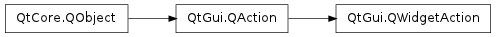

QWidgetAction ¶

Synopsis ¶
Functions ¶
- def createdWidgets ()
- def defaultWidget ()
- def releaseWidget (widget)
- def requestWidget (parent)
- def setDefaultWidget (w)
Virtual functions ¶
- def createWidget (parent)
- def deleteWidget (widget)
Detailed Description ¶
The PySide.QtGui.QWidgetAction class extends PySide.QtGui.QAction by an interface for inserting custom widgets into action based containers, such as toolbars.
Most actions in an application are represented as items in menus or buttons in toolbars. However sometimes more complex widgets are necessary. For example a zoom action in a word processor may be realized using a PySide.QtGui.QComboBox in a PySide.QtGui.QToolBar , presenting a range of different zoom levels. PySide.QtGui.QToolBar provides QToolBar.insertWidget() as convenience function for inserting a single widget. However if you want to implement an action that uses custom widgets for visualization in multiple containers then you have to subclass PySide.QtGui.QWidgetAction .
If a PySide.QtGui.QWidgetAction is added for example to a PySide.QtGui.QToolBar then QWidgetAction.createWidget() is called. Reimplementations of that function should create a new custom widget with the specified parent.
If the action is removed from a container widget then QWidgetAction.deleteWidget() is called with the previously created custom widget as argument. The default implementation hides the widget and deletes it using QObject.deleteLater() .
If you have only one single custom widget then you can set it as default widget using PySide.QtGui.QWidgetAction.setDefaultWidget() . That widget will then be used if the action is added to a PySide.QtGui.QToolBar , or in general to an action container that supports PySide.QtGui.QWidgetAction . If a PySide.QtGui.QWidgetAction with only a default widget is added to two toolbars at the same time then the default widget is shown only in the first toolbar the action was added to. PySide.QtGui.QWidgetAction takes over ownership of the default widget.
Note that it is up to the widget to activate the action, for example by reimplementing mouse event handlers and calling QAction.trigger() .
Mac OS X : If you add a widget to a menu in the application’s menu bar on Mac OS X, the widget will be added and it will function but with some limitations:
- class PySide.QtGui. QWidgetAction ( parent ) ¶
-
Parameters: parent – PySide.QtCore.QObject Constructs an action with parent .
- PySide.QtGui.QWidgetAction. createWidget ( parent ) ¶
-
Parameters: parent – PySide.QtGui.QWidget Return type: PySide.QtGui.QWidget This function is called whenever the action is added to a container widget that supports custom widgets. If you don’t want a custom widget to be used as representation of the action in the specified parent widget then 0 should be returned.
- PySide.QtGui.QWidgetAction. createdWidgets ( ) ¶
-
Return type: Returns the list of widgets that have been using PySide.QtGui.QWidgetAction.createWidget() and are currently in use by widgets the action has been added to.
- PySide.QtGui.QWidgetAction. defaultWidget ( ) ¶
-
Return type: PySide.QtGui.QWidget Returns the default widget.
- PySide.QtGui.QWidgetAction. deleteWidget ( widget ) ¶
-
Parameters: widget – PySide.QtGui.QWidget This function is called whenever the action is removed from a container widget that displays the action using a custom widget previously created using PySide.QtGui.QWidgetAction.createWidget() . The default implementation hides the widget and schedules it for deletion using QObject.deleteLater() .
- PySide.QtGui.QWidgetAction. releaseWidget ( widget ) ¶
-
Parameters: widget – PySide.QtGui.QWidget Releases the specified widget .
Container widgets that support actions call this function when a widget action is removed.
- PySide.QtGui.QWidgetAction. requestWidget ( parent ) ¶
-
Parameters: parent – PySide.QtGui.QWidget Return type: PySide.QtGui.QWidget Returns a widget that represents the action, with the given parent .
Container widgets that support actions can call this function to request a widget as visual representation of the action.
- PySide.QtGui.QWidgetAction. setDefaultWidget ( w ) ¶
-
Parameters: w – PySide.QtGui.QWidget Sets widget to be the default widget. The ownership is transferred to PySide.QtGui.QWidgetAction . Unless PySide.QtGui.QWidgetAction.createWidget() is reimplemented by a subclass to return a new widget the default widget is used when a container widget requests a widget through PySide.QtGui.QWidgetAction.requestWidget() .